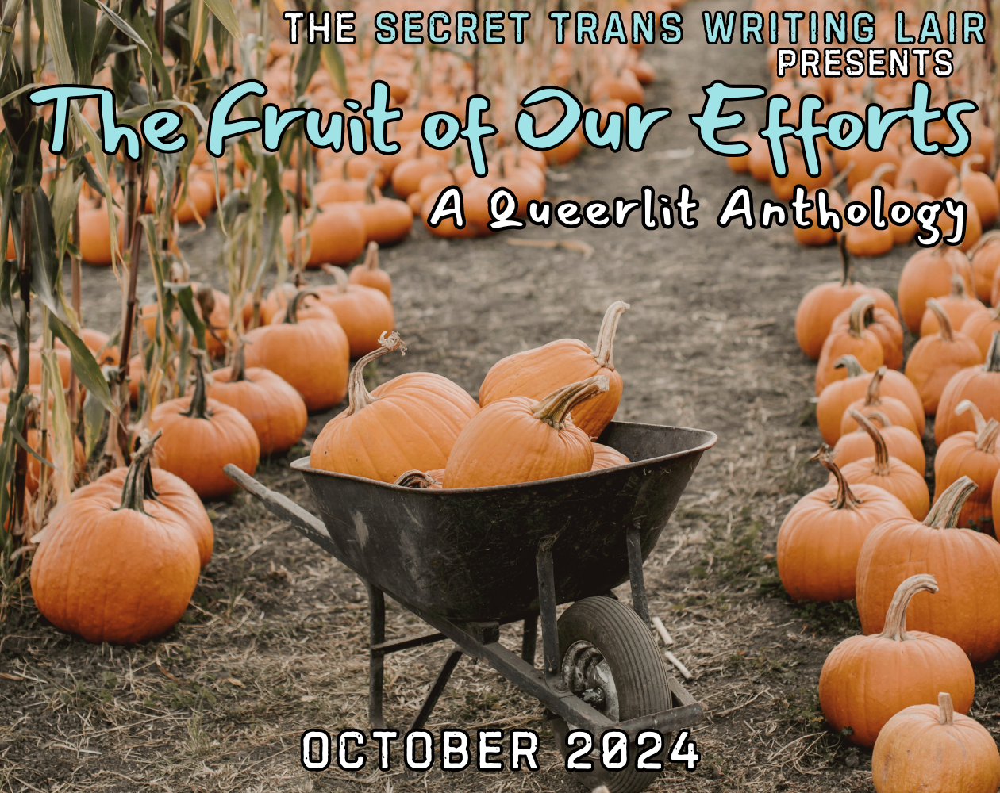
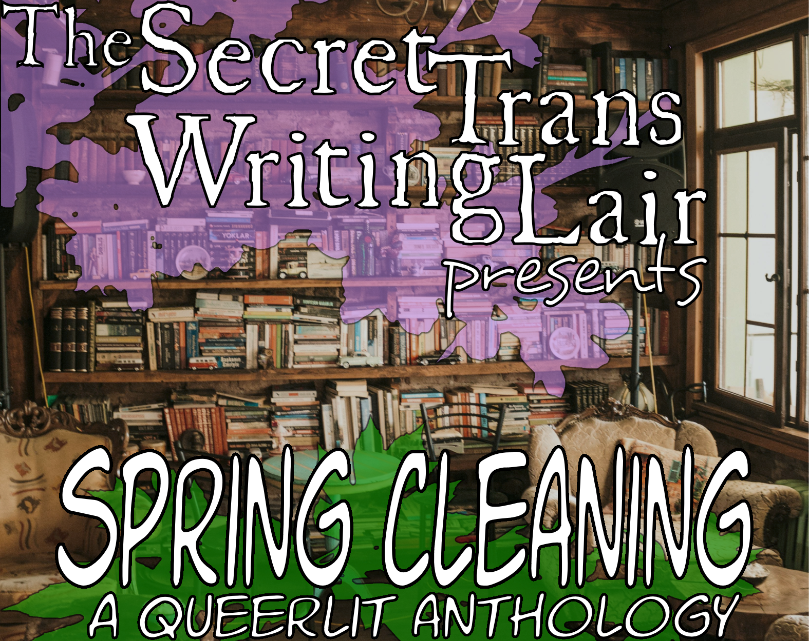
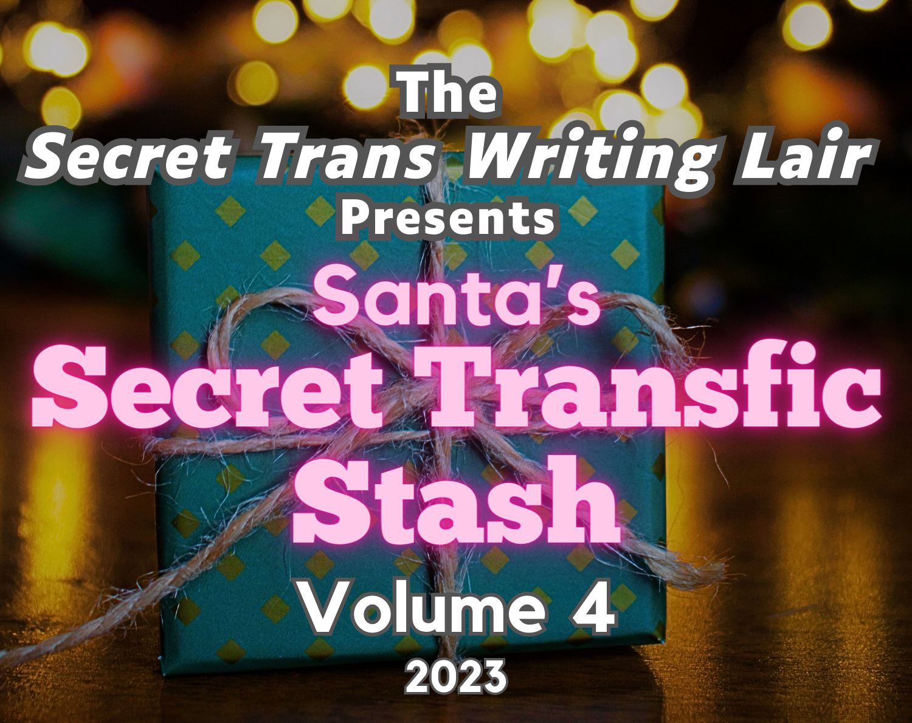
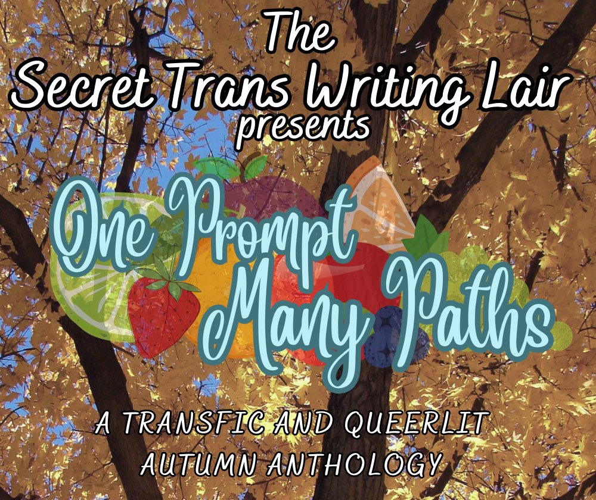
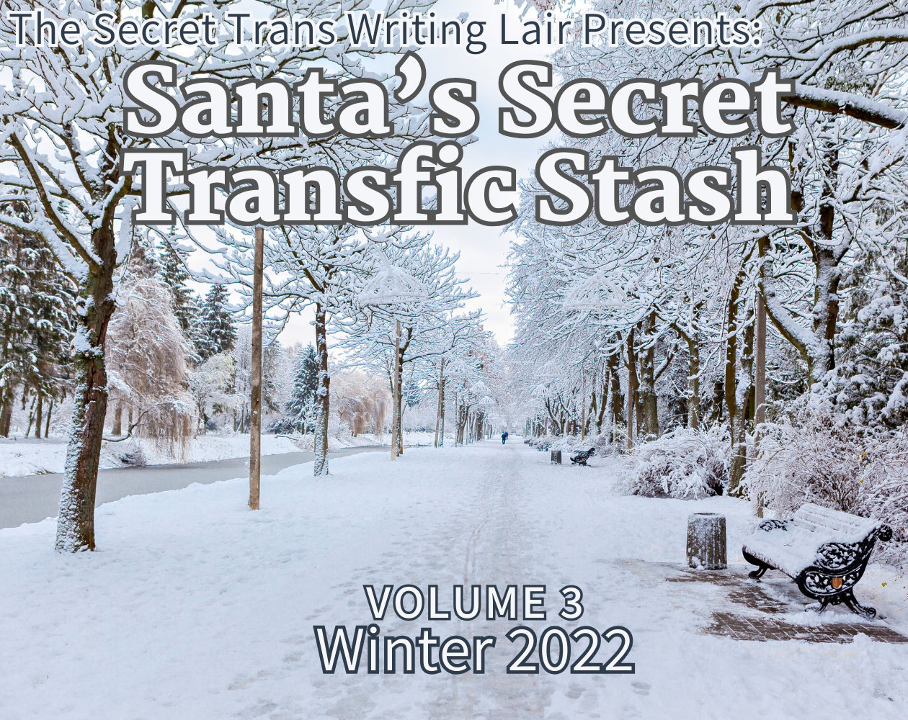
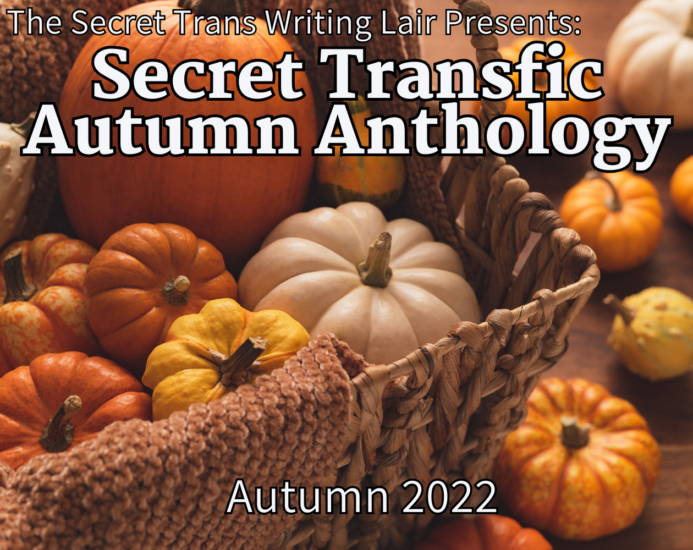
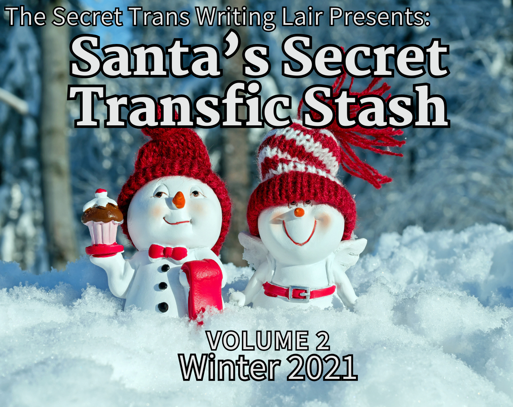
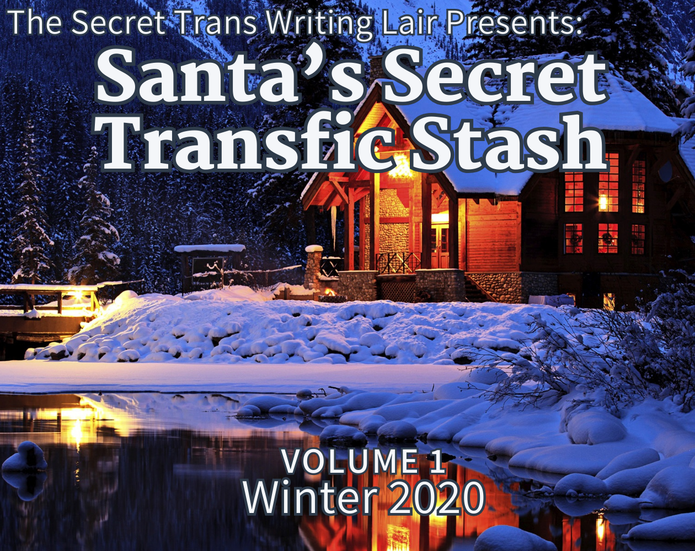

Scribble Hub
Scribble Hub
We at the Secret Trans Writing Lair are proud to share our passion with you. Please explore seasonal collections from across the years, representing the work of hobbyists and professionals who strive to bring transgender themes into readily-available fiction. 100% of revenue is shared equally between contributing artists.
Many stories within these bundles have been cross-posted to the affiliated STWL Scribble Hub account where they can be viewed for free, however others remain exclusive to their respective bundles.

The Fruit of Our EfffortsOctober 2024US$6.00 Visit the Bundle Fall has come around, and with a turn of the season comes an all new anthology from the Secret Trans Writing Lair! Grab your pumpkin spice, snuggle up in the crisp air, and tuck into eleven all new stories from some of your favorite queerlit authors. A romance with a knight who may not be all they claim to be, love and war in the far flung galaxy, the horror of a serial killer's obsession, schoolgirls trapped in an endless timeloop. All this plus vampires, witches, mad scientists, and more await you in this autumnal anthology spanning genres from romance and comedy to horror and drama. |

Spring CleaningMarch 2024US$5.00 Visit the Bundle Spring is in the air! The flowers are in bloom, the chill is receding, and renewal is all around us. Why not take a break from cleaning out those dusty rafters and curl up with nine brand new stories from some of your favorite queerlit authors? Every writer has an idea which has languished in a corner of their mind or in their drafts folder, sometimes for years on end. An idea that's just too good to completely discard, but which you don't know how to start or finish writing. Well, as it turns out, this year we had the perfect chance to do it! Several trans writers stepped up to the challenge, delved deep into their trove of unfinished products, and are now presenting you the results. |

Santa's Secret Transfic Stash Volume 4December 2023US$15.00 Visit the Bundle The season is upon us! For the fourth year in a row, the members of the Secret Trans Writing Lair have exchanged Secret Santa stories, and now is your chance read them! Thirty stories and over 240,000 words of fiction, ranging from short stories to novella, all in one collection. And, new to this bundle and available only to purchases here, there is a convenient collected Epub with all of the stories gathered together! In this collection you'll find action packed tales, sweet romances, spiritual awakenings, elves and pixies, demons and deergirls, and much much more! A wide variety of festive queer fiction from thirty trans authors await you in Santa's Secret Transfic Stash vol 4! |

One Prompt, Many PathsOctober 2023US$10.00 Visit the Bundle Ten different branches, one seed! See how the minds of ten different queer authors take the same prompt. As varied as we all are, different as paths could possibly be. With your purchase, you get access to ten stories: Superheroes and Villains, Monsters and Demons, Murder and Romance, Heartache and Growth, Euphoria and Dysphoria. They're united by the seed of one idea, but they all shine on their own! All stories included were inspired by the same prompt: Two people are hiding a secret from each other, but believe that the other has the same secret! But when the secrets are revealed, it turns out they aren't the same. When the truth is revealed to one or both, how does it change the way the characters see each other - and the world at large? |

MermayMay 2023US$8.00 Visit the Bundle Camping in the woods, the deep sea, creatures both beautiful and haunting. This is an anthology of queer-lit short stories and novelettes, ready for your beach reading season! These stories span a wide variety of styles and subjects, including fantasy, horror, romance, and realistic fiction, all centered on a summery theme! |

Santa's Secret Transfic Stash Volume 3December 2022US$8.00 Visit the Bundle A bundle of short stories originating from a Secret Santa writing exchange in December 2022. These stories span a wide variety of styles and subjects, including fantasy, sci-fi, and realistic fiction, but most of them in some way deal with transgender themes. |

Secret Transfic Autumn AnthologyOctober 2022US$10.00 Visit the Bundle An anthology of stories, some Autumn-themed, some Halloween-themed, and some horror. These stories span a wide variety of styles and subjects, including fantasy, sci-fi, and realistic fiction, but most of them in some way deal with transgender themes. |

Santa's Secret Transfic Anthology Vol 2December 2021US$6.00 Visit the Bundle A bundle of short stories originating from a Secret Santa writing exchange in December 2021. These stories span a wide variety of styles and subjects, including fantasy, sci-fi, and realistic fiction, but most of them in some way deal with transgender themes. |

Santa's Secret Transfic Anthology Vol 1December 2020US$5.00 Visit the Bundle A bundle of short stories originating from a Secret Santa writing exchange in December 2020. These stories span a wide variety of styles and subjects, including fantasy, sci-fi, and realistic fiction, but most of them in some way deal with transgender themes. |